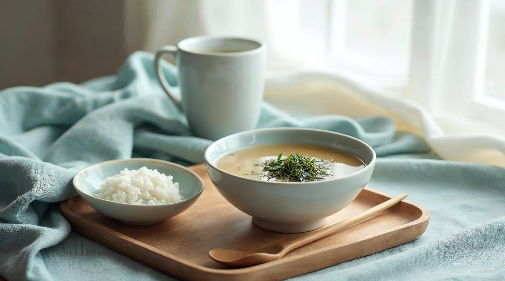

이종호 한의사 감수좋은꿈참사랑한의원 대표원장 (한의사 면허번호 19769)발행 2026-11-26 · 수정 2026-11-26
이 글의 차례
새벽 수유를 마치고 아기를 내려놓자마자 다시 칭얼거리는 소리가 들립니다. 방금 먹였는데 왜 또 우는 걸까. 가슴을 만져 보니 말랑하기만 하고, 유축기로 짜 보면 바닥에 겨우 깔릴 만큼만 나옵니다. '내 젖이 부족한 건 아닐까' 하는 생각에 눈물이 핑 돕니다.
모유량에 대한 걱정은 수유하는 엄마들이 진료실에서 가장 많이 꺼내는 고민 가운데 하나입니다. 주변에서 "젖이 잘 나와야 할 텐데"라는 말을 들을 때마다 마음이 무거워지고, 아기가 울 때마다 내 탓인 것만 같습니다.
그런데 엄마가 느끼는 '부족함'과 아기에게 실제로 '부족한 것'은 다를 때가 많습니다. 가슴이 예전처럼 빵빵하지 않은 것, 유축량이 적은 것, 아기가 자주 먹으려 하는 것은 젖이 부족하다는 뜻이 아닐 수도 있습니다. 반대로 아기의 신호를 보고 실제로 확인이 필요한 경우도 있습니다.
이 글에서는 모유량이 정말 부족한지 확인하는 방법, 모유량에 영향을 주는 이유, 엄마가 일상에서 해 볼 수 있는 것, 그리고 소아청소년과와 모유수유 상담과 함께 한의원에서 살필 수 있는 부분을 정리했습니다.
젖이 정말 부족한지는 어떻게 알 수 있나요
모유량을 가장 잘 알려 주는 것은 엄마의 가슴이 아니라 아기입니다. 가슴의 느낌이나 유축량은 날마다, 사람마다 크게 다르기 때문에 그것만으로 젖이 부족하다고 판단하기는 어렵습니다. 대신 아기가 보내는 신호를 살펴보세요.
- 하루 동안 젖은 기저귀가 충분히 나오는지(생후 며칠이 지나면 하루 여섯 개 안팎)
- 소변 색이 맑고 연한 노란빛인지
- 변이 날마다 나오고, 생후 며칠 뒤에는 노랗게 바뀌는지
- 수유 중에 꿀꺽꿀꺽 삼키는 소리가 들리는지
- 수유 뒤에 아기가 비교적 편안해 보이는지
- 소아청소년과에서 잰 체중이 꾸준히 늘고 있는지
이 신호들이 대체로 괜찮다면 젖이 크게 부족하지 않을 가능성이 높습니다. 반대로 기저귀가 눈에 띄게 줄고 소변이 진하거나, 체중이 잘 늘지 않는다는 말을 들었다면 소아청소년과와 모유수유 상담을 먼저 받아 보시길 권합니다.
왜 모유량이 줄거나 부족하게 느껴질까요
모유는 아기가 빠는 만큼 만들어지는 성질이 있습니다. 아기가 자주, 효과적으로 젖을 비워 주면 몸은 더 만들어야 한다는 신호를 받고, 젖이 오래 차 있으면 덜 만들어도 된다는 신호를 받습니다. 그래서 수유 횟수와 젖이 비워지는 정도가 모유량에 큰 영향을 줍니다.
아기가 젖을 잘 물지 못하는 경우도 흔한 이유입니다. 젖꼭지만 얕게 물면 아기는 오래 빨아도 젖을 충분히 먹지 못하고, 엄마는 젖꼭지가 아프고 상처가 나기 쉽습니다. 혀 밑의 끈이 짧거나, 아기가 일찍 태어났거나, 잠이 많은 아기라면 젖을 비우는 힘이 약할 수 있습니다.
엄마의 몸 상태도 영향을 줍니다. 출산 때 출혈이 많았던 경우, 갑상선 기능에 변화가 있는 경우, 임신 전부터 다낭성 난소 같은 호르몬 변화가 있던 경우, 일부 약을 드시는 경우에는 모유량이 적을 수 있습니다. 이런 부분은 산부인과나 내과에서 함께 확인하는 것이 좋습니다.
잠과 긴장도 무시할 수 없습니다. 극심한 피로와 긴장은 젖이 나오도록 돕는 호르몬의 흐름에 영향을 줄 수 있어서, 마음이 쫓기면 젖이 잘 돌지 않는 느낌을 받는 분이 많습니다. 젖이 부족할까 봐 불안해하는 마음이 다시 젖의 흐름을 막는 고리가 생기기도 합니다.
부족하다고 착각하기 쉬운 순간들
출산 뒤 몇 주가 지나면 가슴이 처음처럼 단단하게 차오르지 않습니다. 많은 엄마들이 이때 젖이 줄었다고 걱정하시지만, 대개는 몸이 아기에게 필요한 만큼에 맞춰 양을 조절하게 된 것입니다. 가슴이 말랑해졌다고 해서 젖이 없어진 것은 아닙니다.
아기가 갑자기 평소보다 훨씬 자주 먹으려 하는 날도 있습니다. 흔히 급성장기라고 부르는 시기로, 아기가 많이 자라는 동안 젖을 더 자주 찾으며 엄마 몸에 양을 늘려 달라고 신호를 보내는 것입니다. 이런 날이 며칠 이어지다가 다시 리듬을 찾는 경우가 많습니다.
유축량도 오해를 부르기 쉽습니다. 유축기는 아기만큼 젖을 잘 비우지 못하는 경우가 많고, 엄마의 긴장 상태나 시간대, 유축기 깔때기 크기에 따라서도 양이 크게 달라집니다. 유축량이 적다고 해서 아기가 먹는 양도 적다고 단정할 수는 없습니다.
복직하거나 아기가 자라며 양이 달라질 때
복직을 하고 낮 동안 아기와 떨어져 지내면 젖을 비우는 횟수가 줄어 양이 줄었다고 느끼는 분이 많습니다. 이럴 때는 아기가 먹던 시간에 맞춰 직장에서 유축하는 시간을 정해 두는 것이 도움이 됩니다. 유축할 곳과 시간은 미리 회사와 이야기해 두시면 마음이 편합니다.
아기가 자라며 이유식을 시작하면 젖을 찾는 횟수가 자연스럽게 줄고 모유량도 그에 맞춰 줄어듭니다. 이것은 부족해진 것이 아니라 아기의 먹는 방식이 바뀌는 흐름입니다. 이 시기의 양 변화는 아기의 성장과 함께 소아청소년과에서 살펴보시면 됩니다.
생리가 다시 시작되는 무렵에도 며칠 동안 젖이 덜 도는 느낌을 받는 분이 있습니다. 대개 며칠 지나면 다시 리듬을 찾으니, 그 사이에는 수유 횟수를 조금 늘리고 물과 끼니를 더 챙겨 주세요.
수유하는 엄마의 마음도 함께 살펴 주세요
젖이 부족할까 봐 불안한 마음은 수유 시간을 시험처럼 만들기도 합니다. 아기가 울 때마다 내 젖이 모자란 탓 같고, 다른 엄마들과 비교하게 됩니다. 이 불안이 오래 이어지면 수유가 즐거움이 아니라 숙제가 되어 버립니다.
수유하는 동안에는 휴대폰을 잠시 내려놓고, 아기의 얼굴과 숨소리에 마음을 두어 보세요. 어깨에 힘을 빼고 숨을 길게 내쉬면 몸이 조금 느슨해지며 젖이 도는 느낌을 받는 분도 있습니다. 마음이 계속 가라앉는다면 그 마음도 진료실에서 함께 이야기해 주세요.
분유를 함께 먹이면 모유를 포기하는 걸까요
모유가 부족할 때 분유를 함께 먹이는 것을 실패처럼 느끼는 엄마들이 많습니다. 하지만 아기가 잘 먹고 잘 자라는 것이 가장 중요하고, 모유와 분유를 함께 먹이는 혼합 수유도 충분히 좋은 선택입니다. 그 결정에 죄책감을 느끼지 않으셨으면 합니다.
혼합 수유를 하면서도 모유를 이어 가고 싶다면, 분유를 먹이기 전에 먼저 젖을 물리거나 분유를 먹인 시간에 유축을 해서 젖을 비워 주는 방법이 있습니다. 어떤 방식이 우리 아기와 엄마에게 맞는지는 소아청소년과나 모유수유 상담에서 함께 정하시면 됩니다.
먼저 이렇게 여쭙니다
처음 오시면 저는 대략 이런 순서로 여쭙니다. 미리 생각해 오시면 상담이 훨씬 수월해집니다.
- 출산하신 지 얼마나 되었고, 출산 방법과 출혈량은 어땠나요?
- 하루 수유 횟수와 한 번에 걸리는 시간은 어느 정도인가요?
- 아기의 기저귀 수와 체중 변화는 소아청소년과에서 어떻다고 들으셨나요?
- 젖꼭지가 아프거나 상처가 난 적이 있나요?
- 밤에 몇 시간을 이어서 주무시나요?
- 끼니와 물은 얼마나 드시고, 드시는 약이나 영양제가 있나요?
임신 중 가슴의 변화가 어땠는지, 예전에 갑상선이나 호르몬 관련 진료를 받으신 적이 있는지도 함께 여쭙니다. 엄마 몸의 바탕을 아는 것이 지금의 모유량을 이해하는 데 실마리가 되기도 합니다.
모든 질문에 정확히 답하지 못하셔도 괜찮습니다. 하루 수유 일지만 가져와 주셔도 이야기는 충분히 시작됩니다.
일상에서 먼저 해 볼 수 있는 것
모유량을 늘리는 단 하나의 방법은 없지만, 젖이 잘 돌 수 있는 바탕을 만드는 방법은 있습니다. 엄마가 지치지 않는 범위에서 하나씩 해 보세요.
- 아기가 원할 때 자주 물리기, 신생아 시기에는 하루 여덟 번 이상을 목표로
- 한쪽을 충분히 먹인 뒤 다른 쪽으로 옮기기
- 젖을 깊게 무는지 확인하기, 젖꼭지만이 아니라 유륜까지 넓게
- 수유 전에 따뜻한 수건으로 가슴을 데우고 부드럽게 쓸어 주기
- 수유할 때마다 물 한 잔씩 곁에 두고 마시기
- 아기가 잘 때 엄마도 함께 눕기
젖 물리는 자세는 생각보다 큰 차이를 만듭니다. 아기의 배와 엄마의 배가 마주 닿도록 안고, 아기의 코가 젖꼭지 높이에 오게 한 뒤 입을 크게 벌릴 때 깊게 물려 보세요. 수유할 때 젖꼭지가 계속 아프다면 자세나 물림을 다시 살펴볼 필요가 있으니 모유수유 상담을 받아 보시길 권합니다.
엄마의 식사도 중요합니다. 특별한 음식보다 끼니를 거르지 않는 것이 먼저입니다. 한 손으로 먹을 수 있는 주먹밥이나 삶은 달걀, 바나나 같은 간식을 수유 자리 가까이에 두면 도움이 됩니다. 국물 요리로 물과 영양을 함께 챙기는 것도 좋습니다.
잠은 모유를 위한 가장 기본적인 재료입니다. 밤중 수유 가운데 한 번은 유축해 둔 젖이나 분유로 가족이 대신 먹여 주면 엄마가 몇 시간이라도 이어서 잘 수 있습니다. 낮에 아기가 잘 때는 집안일보다 함께 누워 쉬는 쪽을 선택해 주세요.
인터넷에서 젖이 잘 나온다는 음식이나 차, 보조제를 많이 보시게 됩니다. 이런 것들은 사람마다 맞지 않을 수 있고, 아기에게 전해질 수도 있으니 드시기 전에 소아청소년과나 모유수유 상담에 먼저 여쭤 보세요.
한의원에서 함께 살필 수 있는 경우
- 출산 뒤 기운이 크게 떨어지고 쉽게 지치는 경우
- 출혈이 많았던 출산 뒤 어지럽고 입맛이 없는 경우
- 잠이 부족하고 긴장이 높아 젖이 잘 돌지 않는 느낌이 드는 경우
- 수유 자세 때문에 목, 어깨, 손목, 허리가 아픈 경우
- 젖이 자주 뭉치고 가슴이 묵직한 날이 이어지는 경우
좋은꿈참사랑한의원에 오시면 먼저 아래 '먼저 확인이 필요한' 신호가 없는지부터 봅니다. 그다음 맥을 짚고, 엄마의 잠과 식사, 기운, 출산 뒤 회복 과정을 차례로 여쭙습니다. 수유 자세 때문에 몸이 아픈 곳이 있다면 직접 살펴봅니다.
진찰한 내용을 바탕으로 생활에서 바꿔 볼 것 하나와 함께, 지금 몸 상태에 맞는 관리 방법을 정합니다. 수유 중 한약은 수유 중이라는 사실과 드시는 약을 확인한 뒤 신중하게 결정하고, 모유량이 늘어난다고 약속드리지 않습니다. 처방받은 약은 처방한 선생님과 상의 없이 멈추지 않습니다.
한의원 진료는 소아청소년과나 모유수유 상담을 대신하는 것이 아니라 나란히 가는 것입니다. 아기의 성장과 수유 방법은 그곳에서 살피고, 한의원에서는 엄마의 회복과 잠, 몸의 긴장을 함께 돌본다고 생각해 주시면 됩니다.
이렇게 기록해 오시면 상담이 쉬워집니다
모유량은 하루의 흐름으로 보면 훨씬 잘 보입니다. 사흘 정도만 간단히 적어 보세요.
- 수유 시각과 시간, 어느 쪽 가슴을 먹였는지
- 젖은 기저귀와 변 기저귀 수
- 유축했다면 시각과 양
- 분유를 함께 먹였다면 시각과 양
- 엄마가 잔 시간과 끼니, 물 마신 양
- 젖꼭지 통증이나 가슴 뭉침이 있었는지
기록을 나란히 놓고 보면 수유 간격과 엄마의 잠, 식사 사이의 연결이 보이기 시작합니다. 같은 기록을 소아청소년과나 모유수유 상담 때 보여 드리면 이야기가 훨씬 수월해집니다.

젖의 양이 엄마의 사랑을 재는 것은 아닙니다
모유량이 적다는 걱정은 엄마의 마음을 쉽게 무너뜨립니다. 하지만 젖의 양이 엄마가 아기를 사랑하는 크기를 말해 주지는 않습니다. 모유든 분유든, 아기를 안고 먹이는 그 시간 자체가 아기에게는 충분히 따뜻한 시간입니다.
오늘 아기가 젖은 기저귀를 몇 개 채웠는지, 엄마는 끼니를 몇 번 챙겼는지만 떠올려 보세요. 그 두 가지를 지킨 하루라면 이미 충분히 잘해 내신 하루입니다.
이번 주에는 사흘 동안 수유 일지 쓰기, 밤중 수유 한 번 가족에게 맡기기 가운데 하나만 골라 보세요. 다음에 오시면 그 기록을 함께 펼쳐 보겠습니다.
이런 증상은 먼저 확인이 필요합니다
- 아기의 젖은 기저귀가 크게 줄고 소변이 진하거나, 아기가 처지고 잘 먹지 않으며 피부나 눈이 점점 노래지는 경우
- 엄마의 가슴 한쪽이 붉고 뜨겁게 부으며 열과 오한이 나는 경우
이런 신호가 있으면 한의원보다 가까운 병원이나 응급실을 먼저 찾으세요.
함께 읽으면 좋은 글
- 수유 중 가슴이 딱딱하게 붓고 아픈 젖몸살은 어떻게 살피고, 언제 진료를 먼저 받나요?
- 출산 뒤 몸 회복, 관절·땀·잠·기분은 무엇부터 살피나요?
- 제왕절개로 출산한 뒤 몸 회복은 무엇부터 살피고, 생활은 어떻게 하나요?
- 출산 뒤 우울감과 불안이 몇 주째 이어질 때(산후 우울)는 어떻게 살피나요?
- 출산 뒤 아기를 안다가 손목과 손가락이 아플 때는 어떻게 하나요?
여쭙는 것
- 출산하신 지 얼마나 되었고, 출산 방법과 출혈량은 어땠나요?
- 하루 수유 횟수와 한 번에 걸리는 시간은 어느 정도인가요?
- 아기의 기저귀 수와 체중 변화는 소아청소년과에서 어떻다고 들으셨나요?
생활에서 해 볼 것
- 아기가 원할 때 자주 물리기, 신생아 시기에는 하루 여덟 번 이상을 목표로
- 한쪽을 충분히 먹인 뒤 다른 쪽으로 옮기기
- 젖을 깊게 무는지 확인하기, 젖꼭지만이 아니라 유륜까지 넓게
한의원에서 함께 살필 것
- 출산 뒤 기운이 크게 떨어지고 쉽게 지치는 경우
- 출혈이 많았던 출산 뒤 어지럽고 입맛이 없는 경우
- 잠이 부족하고 긴장이 높아 젖이 잘 돌지 않는 느낌이 드는 경우
먼저 확인이 필요한 신호
- 아기의 젖은 기저귀가 크게 줄고 소변이 진하거나, 아기가 처지고 잘 먹지 않으며 피…
- 엄마의 가슴 한쪽이 붉고 뜨겁게 부으며 열과 오한이 나는 경우
한눈에 보는 표
| 구분 | 핵심 |
|---|---|
| 여쭙는 것 | 출산하신 지 얼마나 되었고, 출산 방법과 출혈량은 어땠나요? 하루 수유 횟수와 한 번에 걸리는 시간은 어느 정도인가요? |
| 생활에서 해 볼 것 | 아기가 원할 때 자주 물리기, 신생아 시기에는 하루 여덟 번 이상을 목표로 한쪽을 충분히 먹인 뒤 다른 쪽으로 옮기기 |
| 한의원에서 함께 살필 것 | 출산 뒤 기운이 크게 떨어지고 쉽게 지치는 경우 출혈이 많았던 출산 뒤 어지럽고 입맛이 없는 경우 |
| 먼저 확인이 필요한 신호 | 아기의 젖은 기저귀가 크게 줄고 소변이 진하거나, 아기가 처지고 잘 먹지 않으며 피부나 눈이 점점 노래지는 경우 엄마의 가슴 한쪽이 붉고 뜨겁게 부으며 열과 오한이 나는 경우 |
자주 묻는 질문
유축했을 때 양이 적으면 모유가 부족한 건가요?
유축량은 유축기, 시간대, 엄마의 긴장 상태에 따라 크게 달라서 그것만으로 판단하기 어렵습니다. 아기의 기저귀 수와 체중 변화를 함께 보시고, 걱정되면 소아청소년과에서 확인해 보세요.
수유 중에 한약을 먹어도 되나요?
수유 중이라는 사실과 드시는 약을 모두 확인한 뒤 신중하게 정합니다. 아기의 상태에 따라 소아청소년과와 상의하시도록 안내하기도 하니, 처음에 수유 중임을 꼭 알려 주세요.
젖이 잘 나온다는 음식을 많이 먹으면 도움이 되나요?
특정 음식보다 끼니를 거르지 않고 물을 충분히 마시는 것이 먼저입니다. 차나 보조제는 사람마다 맞지 않을 수 있으니 드시기 전에 소아청소년과나 모유수유 상담에 여쭤 보세요.
분유를 섞어 먹이면 모유가 더 줄어드나요?
젖을 비우는 횟수가 줄면 양이 줄 수 있습니다. 모유를 이어 가고 싶다면 분유 전에 먼저 젖을 물리거나 그 시간에 유축하는 방법을 모유수유 상담에서 함께 정해 보세요.
수유 자세 때문에 손목과 어깨가 아파요.
수유 쿠션으로 아기를 엄마 쪽으로 올려 몸을 숙이지 않게 하는 것이 먼저입니다. 통증이 이어지면 한의원에서 목, 어깨, 손목을 직접 살펴보며 생활 속 자세를 함께 정합니다.
좋은꿈참사랑한의원은 재진 때 지난번 이야기부터 이어서 여쭙니다. 진료시간과 예약은 오시는 길에서 확인하세요.
어디서 상담받을 수 있나요?
좋은꿈참사랑한의원은 서울 동작구 만양로2길 2 신성빌딩 3층·5층(서울 동작구 상도동, 7호선 상도역 3번 출구 근처)에 있습니다. 한의사 3명(이종호 대표원장, 조영기 수석진료원장, 정원영 진료원장)이 진료합니다. 진료시간은 평일 09:30~20:00(점심 13:00~14:00), 토·일·공휴일 09:30~15:00이며, 방문 전 전화로 확인을 권합니다. 예약은 네이버 예약, 카카오톡 상담, 전화 02-815-7510로 받습니다.
이 글은 일반적인 건강 정보이며 개인의 진단이나 치료를 대신하지 않습니다. 증상이 있거나 복용 중인 약이 있다면 진료를 통해 확인하세요. 치료 효과는 개인마다 다를 수 있습니다.
작성 기준: 일반적으로 알려져 있는 건강 정보를 참고해 정리했습니다(대표원장 감수). 증상 기록은 1~2주 동안 하루 1회, 비슷한 시간에 적어 오시면 지난 상태와 비교하기 쉽습니다.